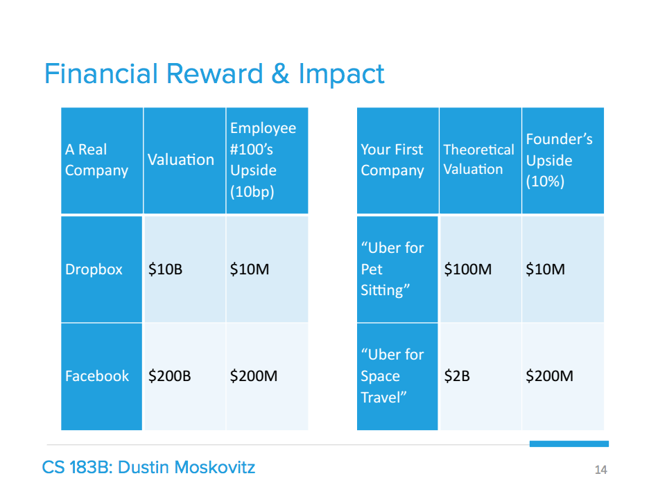

Good and Bad Reasons to Become an Entrepreneur
By Dustin Maskovitz
Recently we hosted a Q&A at Asana that I participated in with Ben Horowitz, Matt Cohler, and Justin Rosenstein. Marcus Wohlsen from Wired attended and wrote an article that discussed our views on the culture of entrepreneurship in Silicon Valley. This is an important topic, so I want to take some time to clarify what we meant in this blog post. Before I do, I’d like to emphasize that we were talking exclusively about Silicon Valley culture and not the more general ‘small business entrepreneur.’ So for our audience at the time, entrepreneur meant “Silicon Valley startup technology entrepreneur.”
Even given that context, it is notable that we all said you “probably” shouldn’t be an entrepreneur, not that you definitely shouldn’t. This is explicitly a directional position; we believe there are too many startups and entrepreneurs in the SV ecosystem, but that is very different from saying there shouldn’t be any. Many people think there should be more, and we are counterbalancing that view. Whenever you counterbalance an extreme view, you tend to also come off extremely, and certainly do in the media (which is related to the point I made about integration in my last post).
The reason we like best for becoming an entrepreneur is that you are extremely passionate about an idea and believe that starting a new company is the best way to bring it into the world. The passion is important because entrepreneurship is hard and you’ll need it to endure the struggle, as well as to convince other people to help you. Believing that starting a new company is the best way to bring it into the world is important to ensure that resources—including most importantly your own time — are being put to the best possible use. If the idea is best brought into the world by an existing team, then it is tautologically optimal for the world for it to happen that way. Of course, not everyone is actually trying to optimize their impact, but many entrepreneurs are, by their own admission, and it is important for those people to consider this angle.
If you’re not trying to maximize impact, then it seems like a reasonable assumption that you are instead optimizing around personal lifestyle preferences of some kind. You want total freedom to choose how you make your living, regardless of if it necessarily provide large amounts of value to other people or perhaps is even redundant with something that already exists. Or you want extreme flexibility in your schedule, maybe including the ability to stop working altogether for long periods of time at short notice. Or you want to work on a certain kind of problem or with certain kinds of people. For many kinds of preference, you likely can actually find a company able to give them to you, but certainly starting your own is a great shortcut and I personally think that’s totally reasonable. I like people who are seeking to have big impact on the world, but it is not the only path worth taking, and I have no reason to denigrate this type of entrepreneur.
So with all that in mind, here are some of the bad reasons to become an entrepreneur that we were actually trying to speak to:
-
You want to be your own boss in a big company. Evernote CEO Phil Libin put it well last year:
- “People have this vision of being the CEO of a company they started and being on top of the pyramid. Some people are motivated by that, but that’s not at all what it’s like.
- What it’s really like: everyone else is your boss – all of your employees, customers, partners, users, media are your boss. I’ve never had more bosses and needed to account for more people today.
- The life of most CEOs is reporting to everyone else, at least that’s what it feels like to me and most CEOs I know. If you want to exercise power and authority over people, join the military or go into politics. Don’t be an entrepreneur.”
- You think it’s glamorous. The media does a great job idolizing various entrepreneurs, crowning Kings and designating Godfathers of various mafias, but this is all colorful narrative. The reality is years of hard work, throughout which you usually have no idea if you’re even moving in the right direction.
- You believe you’re extremely talented and that this is the way to maximize your financial return on that talent. Why wouldn’t you want more of the cap table? This is flawed logic, since the 100th engineer at Facebook made far more money than 99% of Silicon Valley entrepreneurs. Small slices of gigantic pies are still themselves gigantic. If you’re extremely talented, you can easily identify a company with high growth potential and relatively low risk and get an aggressive compensation package from them. If you turn out to be wrong after a few years, you can try again. Within 2 or 3 tries, and likely on the first one, you’ll have a great outcome and can be confident you contributed serious lasting value to the world. If you instead try to immediately start “the next Google or Facebook”, there is a very high likelihood that you will fail completely, or be forced to settle for a much smaller outcome. It will take a long time to reach success or failure, so you won’t have many tries.
- You heard Paul Graham compared non-founders to animals at a zoo and don’t want to look like a chump (or a chimp). As Jeff Atwood points out, this is much more projection than fact. There are companies that feel like they were lifted out of a Dilbert cartoon and treat their employees terribly and then there are, you know, good companies. Work for one of those, or work for yourself, but definitely don’t work anywhere that you can describe as “soul-sucking”.
Yes, this viewpoint is somewhat self-serving. We want to hire the best at Asana, and many of the best are choosing to become entrepreneurs instead of applying at companies like ours. That said, we only need to hire a quite small number of those folks to ourselves succeed. The bigger concern is the macro effect of spreading talent too thinly across the board and the micro effect of people not spending their time in valuable ways. Zuck himself has speculated that Silicon Valley is not obviously the place he would start a company like Facebook today for exactly this reason. As to the micro effect, I like the way Justin puts it: “If you’re going to devote the best years of your life to your work, have enough love for yourself and the world around you to work on something that matters to you deeply”.